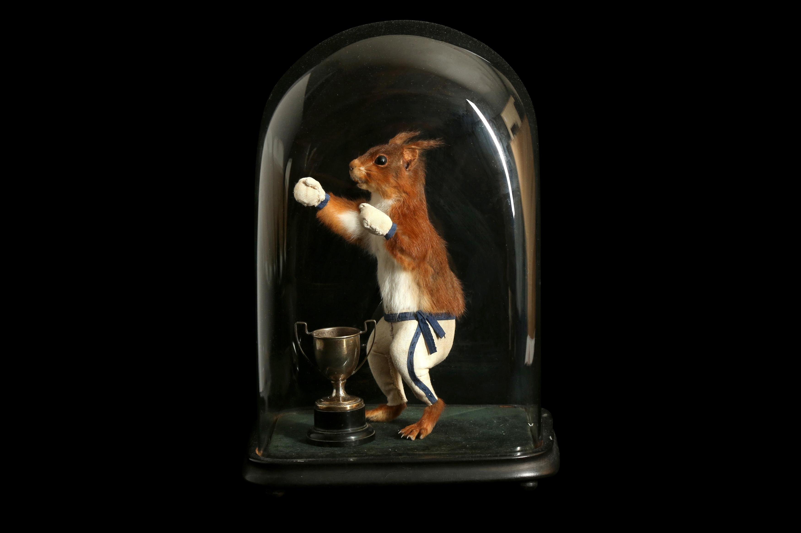
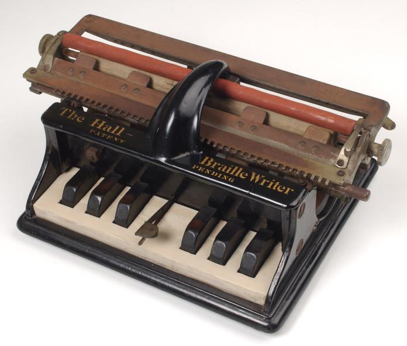
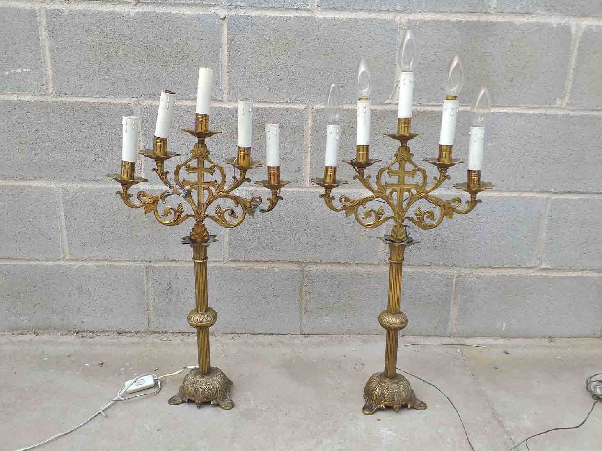
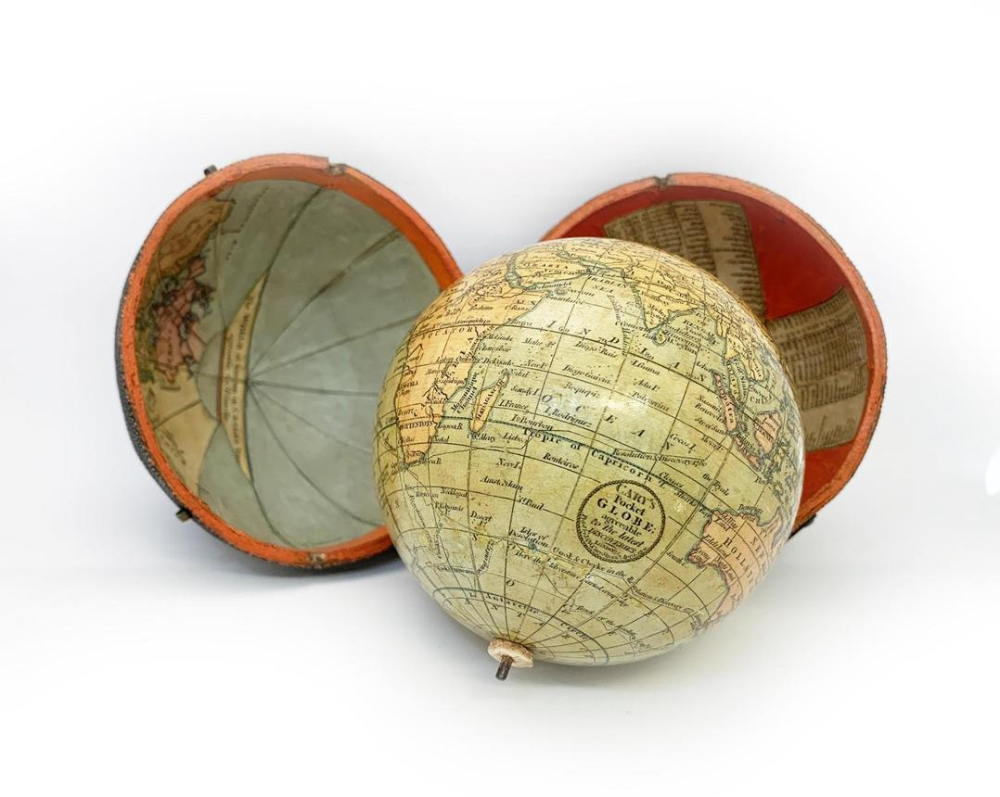

Ardilla Boxeadora
Una curiosa pieza de taxidermia antropomórfica de finales del siglo XIX. La ardilla aparece vestida con pantalones y guantes de boxeo, junto a un pequeño trofeo plateado, dentro de una urna de cristal. Piezas similares se han vendido realmente en subastas; un ejemplar alcanzó £2.375 en 2021.

Maquina de Escribir Braile
Una pieza histórica de tecnología asistiva, con mecanismo mecánico para escribir directamente en Braille. Conserva su aspecto industrial original.

Candelabros Transilvania
Elegante pareja de candelabros de pie de estilo clásico, realizados en metal con acabado dorado envejecido. Cada pieza presenta varios brazos ornamentados con detalles curvados y motivos decorativos, junto con bases de inspiración clásica.

Globo Terraqueo de Bolsillo
Pequeño globo terrestre antiguo diseñado para poder transportarse. A pesar de su reducido tamaño, representa continentes, océanos y rutas marítimas con gran detalle.